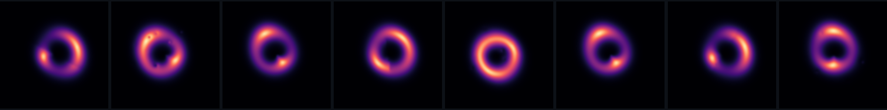
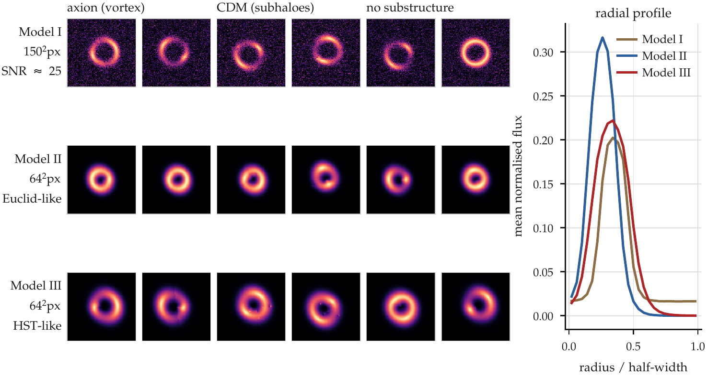
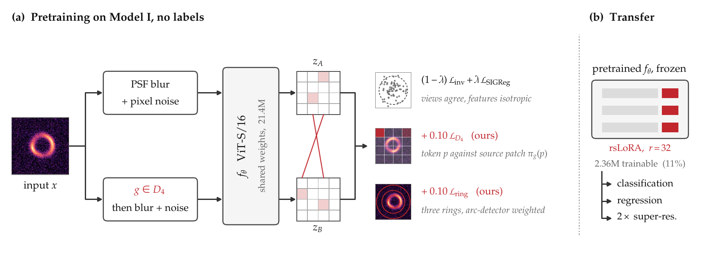
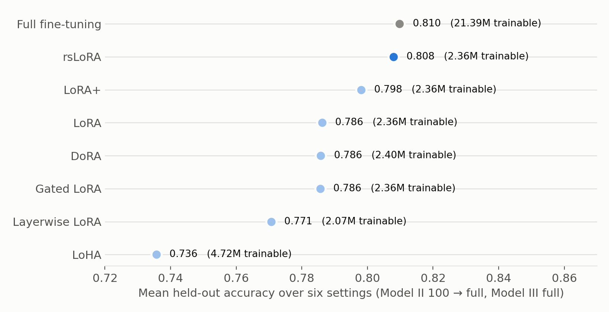
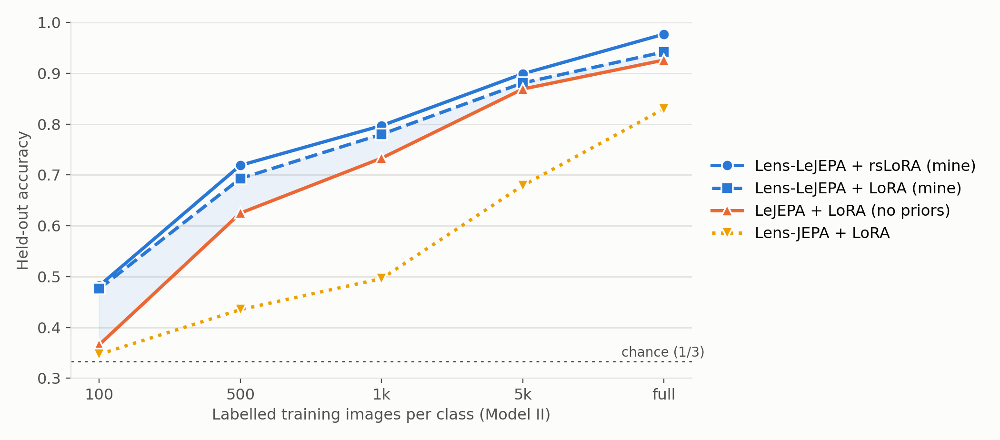
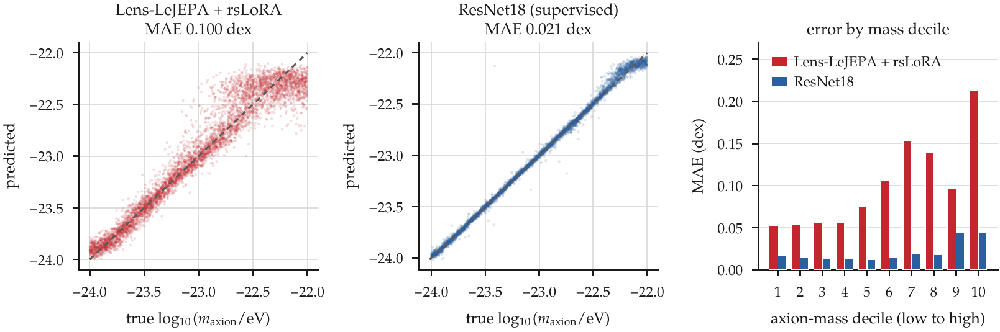
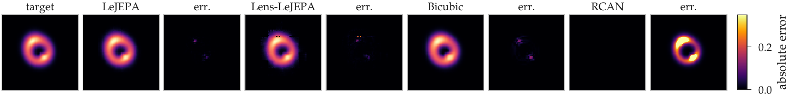
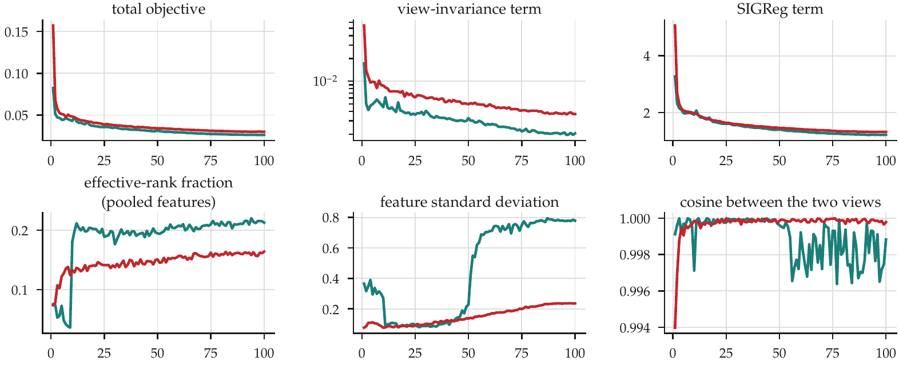

Lens-LeJEPA: Self-Supervised Learning for Dark Matter Substructure
My Google Summer of Code 2026 project with ML4SCI DeepLense.

Simulated strong lenses from the DeepLense Model III test set.
- Program
- Google Summer of Code 2026
- Organisation
- ML4SCI · DeepLense
- Code
- github.com/arnesh2212/Lens-FM-DeepLense
01Introduction
When a massive galaxy lies between us and a more distant one, its gravity bends the light from the far galaxy into arcs, sometimes into a full ring. This is strong gravitational lensing. The shape of these arcs depends on how the mass inside the lens is distributed, including small clumps of dark matter that we can't see directly. So lens images are one of the few places where we can test dark matter on small scales.
Different dark matter models leave slightly different marks. In cold dark matter (CDM), the main halo is full of small subhaloes. If dark matter is an ultra-light axion, it behaves like a wave and creates vortex-like patterns. The DeepLense project tries to tell these apart from images alone.
Supervised models already do this well on simulated data, but they need labels, and every label comes from a simulation that assumed a dark matter model in the first place. Surveys like Euclid will give us a huge number of lens images with no labels. That is where self-supervised learning (SSL) makes sense: learn from unlabelled images first, then fine-tune with a few labels.
The catch is that most SSL methods learn by comparing two augmented copies of an image, made with random crops, zooms and colour changes. For lenses, zooming is not harmless. It changes the apparent Einstein radius \(\theta_E\) (the radius of the ring), and the mass inside the ring grows as \(\theta_E^2\). So a model trained to ignore zoom is also trained to ignore mass. The LenSiam paper pointed this out, and it is where my project started.
02Data
I used the public DeepLense simulations, made with lenstronomy. Every image has a lens galaxy in the centre and a lensed background galaxy around it. There are three classes: axion, CDM and no substructure. The classes differ only by small changes in the arcs.

| Dataset | Image size | Train | Test | Used for |
|---|---|---|---|---|
| Model I | 150 × 150 | 87,525 | – | pretraining (no labels) |
| Model II (Euclid-like) | 64 × 64 | 89,104 | 15,000 | all three tasks |
| Model III (HST-like) | 64 × 64 | 89,396 | 15,000 | all three tasks |
Table 1. Datasets. All results in this post are on the held-out test sets.
Two things about this data mattered a lot for my design. The lens is always centred and the blur is the same in every direction, so rotating an image by 90° or flipping it gives another valid image of the same system, with the same class and the same mass. And the useful signal is in the thin bright arcs; most of the image is empty sky. Axion images also come with the simulated axion mass (between \(10^{-24}\) and \(10^{-22}\) eV), which I used for a regression task.
03Starting point
I started by setting up a benchmark. I pretrained a few SSL methods on Model I for 300 epochs and tested them on Model II with 100, 500, 1,000, 5,000 or all labels per class. The methods were I-JEPA, Lens-JEPA (an earlier DeepLense model built on I-JEPA) and LeJEPA, a recent method that doesn't need a teacher network. For comparison I trained supervised models: ResNet18, ViT, ViT-SD, Lensiformer and LensPINN.
With a frozen encoder and a single linear layer on top, the best SSL model only got 72% on full Model II data, while ResNet18 got 99.99%. The features had useful information, but a linear layer could not get it out. Switching to LoRA adapters fixed most of this (on I-JEPA, 0.600 went up to 0.978), so I used adapters for everything after that.
04What did not work
Before arriving at the final method, I tried a few other ideas.
Focusing the loss on arcs
I weighted the I-JEPA loss towards patches with strong edges and curvature. It never beat plain Lens-JEPA at any label budget.
A global rotation loss
I asked the average feature of an image to match that of its rotated copy. It helped only a little (0.866 vs 0.830 at full data), because averaging loses where each patch went.
Lens-Prism-JEPA
A large ViT-Base with a built-in rotation-equivariant tokenizer, arc-aware masking and extra shape targets. After 300 epochs it was at chance on full Model II. I had changed too many things at once to tell what went wrong.
Masked prediction with lensing terms
I added my lensing terms to a masked-prediction objective. The features stayed very low-rank, so I stopped the run after 21 epochs.
These pushed me towards something simpler: keep the model and training setup plain, and add the physics only through the loss.
05Lens-LeJEPA

Base: LeJEPA
I built on LeJEPA because it is simple. It has no teacher network and no stop-gradient. Both views go through the same ViT, the patch features are averaged and projected, and the loss does two things: it pulls the two views together, and a term called SIGReg keeps the embeddings spread out like a Gaussian, so the model can't collapse everything to a single point.
This loss only looks at the averaged feature, so it loses where things are in the image. My two extra terms work on the individual patch features instead.
Augmentations
I only used changes that could come from a real telescope looking at the same system: a small blur (up to about one pixel) and a bit of noise. No crop, zoom or resize, because those change the Einstein radius, and no shifting, because both of my extra terms assume the lens is in the centre.
Prior 1: matching rotated patches
Rotating or flipping the image is safe, so before making the second view I apply one of the 8 rotations and flips of a square (the group \(D_4\)). The image is 160 × 160 pixels and each patch is 16 × 16, so the patches form a 10 × 10 grid. When the image is rotated, every patch lands exactly on another patch position. That means I know which patch in the rotated image came from which patch in the original, and I can compare them one by one:
Here \(\pi_g\) is that patch mapping. This is the part my earlier global rotation loss was missing.
Prior 2: matching rings around the lens
The first term only makes sure information ends up in the right place. It says nothing about the shape of the arcs, which is where the dark matter signal is. So I divide the patch grid into three rings around the centre and average the patch features inside each ring. Each patch is weighted by how much arc it contains, measured with the image gradient and Laplacian, so empty sky counts for less. Rotations don't change how far a patch is from the centre, so these ring features should be the same for both views. The full loss is:
None of this needs labels or a lens model. If I turn both terms off, I get back plain LeJEPA, so I could run a clean comparison: the same ViT-S/16, trained for 100 epochs on Model I with the same settings, with and without the two terms.
06Adapting the encoder
After pretraining, I froze the encoder and added LoRA adapters to all 48 linear layers. I picked the LoRA rank using only the Model II validation set, and used rank 32 for every run after that.
| LoRA rank | 2 | 4 | 8 | 16 | 32 | 64 |
|---|---|---|---|---|---|---|
| Validation accuracy | 0.925 | 0.953 | 0.966 | 0.972 | 0.981 | 0.960 |
Table 2. Choosing the LoRA rank on the Model II validation set.
I also tried seven types of adapters and full fine-tuning. Rank-stabilized LoRA (rsLoRA) worked best. The only difference from normal LoRA is that it scales the update by \(\alpha/\sqrt{r}\) instead of \(\alpha/r\). At rank 32 it trains 2.36M parameters.

rsLoRA wasn't faster per training step than full fine-tuning (122 ms vs 102 ms), since gradients still pass through the whole network. The benefit is memory and storage: one shared encoder, and a small adapter for each task.
07Results
Classification

To measure the effect of the two terms, I compared Lens-LeJEPA and LeJEPA with the same adapter:
| Model II accuracy | 100 | 500 | 1k | 5k | full | Model III |
|---|---|---|---|---|---|---|
| LeJEPA + LoRA | 0.366 | 0.625 | 0.733 | 0.869 | 0.926 | 0.922 |
| Lens-LeJEPA + LoRA | 0.476 | 0.693 | 0.780 | 0.881 | 0.942 | 0.945 |
| Difference | +11.0 | +6.8 | +4.6 | +1.2 | +1.7 | +2.4 |
| Lens-LeJEPA + rsLoRA | 0.482 | 0.719 | 0.797 | 0.899 | 0.977 | 0.974 |
| I-JEPA + LoRA (3× training) | 0.431 | 0.846 | 0.896 | 0.931 | 0.978 | 0.991 |
| Lens-JEPA + LoRA (3× training) | 0.347 | 0.435 | 0.496 | 0.679 | 0.830 | 0.813 |
| ResNet18 (supervised) | 0.600 | 0.896 | 0.986 | 0.998 | 1.000 | 1.000 |
| LensPINN (supervised) | 0.910 | 0.984 | 0.995 | 0.999 | 1.000 | 1.000 |
Table 3. Test accuracy by number of labelled images per class. The difference row is in accuracy points.
The two terms help at every label budget, and the gain is biggest when labels are scarce (+11 points with 100 labels per class). Lens-LeJEPA is 13 to 30 points ahead of Lens-JEPA, although Lens-JEPA is also a much smaller model. I-JEPA, which was trained for 3× longer, does better between 500 and 5,000 labels. The supervised models, LensPINN especially, are still the best on this simulated data.
Axion mass regression
| Mean absolute error (dex) ↓ | Model II | Model III |
|---|---|---|
| Lens-LeJEPA + rsLoRA | 0.100 | 0.090 |
| Lens-LeJEPA + LoRA | 0.149 | 0.109 |
| LeJEPA + LoRA | 0.121 | 0.122 |
| LensPINN (supervised) | 0.042 | 0.035 |
| ResNet18 (supervised) | 0.021 | 0.019 |
Table 4. Predicting \(\log_{10}\) of the axion mass.
The frozen encoder works (R² = 0.937 on Model II), but ResNet18 is about 5× more accurate. Here the two terms don't clearly help: with the same adapter, Lens-LeJEPA is worse than LeJEPA on Model II and better on Model III.

I think this is because heavier axions produce finer, fainter patterns, and my training explicitly teaches the model to ignore blur and noise, which affect exactly those fine details.
2× super-resolution
For this task I shrink each 64 × 64 image to 32 × 32 and train a small decoder on top of the encoder to rebuild it. Since the dataset has no real low/high-resolution pairs, this measures image reconstruction, not a physical resolution gain.

| PSNR (dB) ↑ | Model II | Model III |
|---|---|---|
| RCAN (supervised, from scratch) | 65.12 | 61.41 |
| LeJEPA + LoRA | 48.32 | 45.38 |
| Lens-LeJEPA + LoRA | 44.70 | 42.50 |
| Bicubic | 41.07 | 40.27 |
Table 5. Super-resolution quality.
Both pretrained encoders beat bicubic, but a supervised RCAN trained on the same data is far better, just like the supervised models on the other two tasks. Between the two encoders, the lensing terms cost 3.6 dB, the opposite of what they do for classification.
08Discussion
At first these results confused me: the same loss helps classification, hurts super-resolution and doesn't help regression. My explanation is that the two terms make the model invariant to rotation, blur and noise. For classification that is what we want, since the class doesn't depend on how the telescope was rotated. Super-resolution needs every pixel, and mass regression needs the finest texture, so throwing that information away hurts them.
You can already see this during pretraining. Lens-LeJEPA ends up with a lower effective rank than LeJEPA (0.164 vs 0.213), meaning its features are more compressed. Neither run collapsed, and both lensing terms went down steadily during training.

So which encoder to use depends on the task: Lens-LeJEPA for classification and lens finding, and plain LeJEPA for predicting continuous quantities like mass.
09Future work
- Everything here is simulated. The next step is to pretrain on real survey images and test on known real lenses.
- Each model was trained once with one seed, so small differences (under about one point) shouldn't be taken too seriously.
- I always used both terms together. Testing them separately would show how much each one contributes.
- The ViT only learns to be rotation-equivariant; a model with rotation equivariance built in might close the remaining gap.
- I only ran regression and super-resolution with all labels. It would be interesting to see what happens with fewer.
10Code
arnesh2212/Lens-FM-DeepLensePretraining, the three downstream tasks and configs for every experiment in this post.Acknowledgements
Thanks to my mentors at ML4SCI and the DeepLense team for their guidance and feedback during the summer, and to Google Summer of Code for the opportunity. This work builds on earlier DeepLense projects, especially Lens-JEPA, Lensiformer and LensPINN.
References
- R. Balestriero, Y. LeCun. LeJEPA: Provable and Scalable Self-Supervised Learning Without the Heuristics. 2025. arXiv:2511.08544
- P.-W. Chang, K.-W. Huang, J. Fagin et al. LenSiam: Self-Supervised Learning on Strong Gravitational Lens Images. NeurIPS 2023 AI for Science Workshop. arXiv:2311.10100
- J. Rishi, P. R. Kumbam, M. W. Toomey, S. Gleyzer. Lens-JEPA: Physics Informed Joint Embedding Predictive Architecture. NeurIPS 2025 ML4PS Workshop. PDF
- M. Assran et al. Self-Supervised Learning from Images with a Joint-Embedding Predictive Architecture. CVPR 2023. arXiv:2301.08243
- L. J. Velôso, M. W. Toomey, S. Gleyzer. Lensformer: A Physics-Informed Vision Transformer for Gravitational Lensing. NeurIPS 2023 ML4PS Workshop. PDF
- A. Ojha, S. Gleyzer, M. W. Toomey, P. R. Kumbam. LensPINN: Physics Informed Neural Network for Learning Dark Matter Morphology in Lensing. NeurIPS 2024 ML4PS Workshop. PDF
- D. Kalajdzievski. A Rank Stabilization Scaling Factor for Fine-Tuning with LoRA. 2023. arXiv:2312.03732
- E. J. Hu et al. LoRA: Low-Rank Adaptation of Large Language Models. ICLR 2022. arXiv:2106.09685
- S. Alexander, S. Gleyzer, E. McDonough, M. W. Toomey et al. Deep Learning the Morphology of Dark Matter Substructure. The Astrophysical Journal, 2020. arXiv:1909.07346
- S. Birrer, A. Amara. lenstronomy: Multi-purpose gravitational lens modelling software package. Physics of the Dark Universe, 2018. arXiv:1803.09746